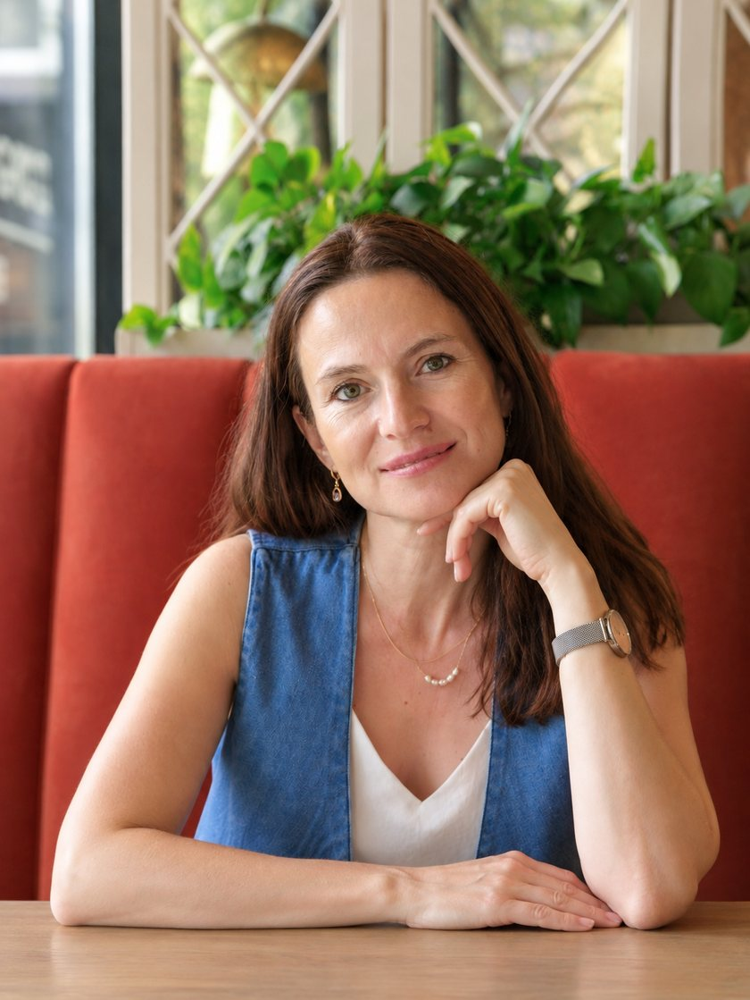
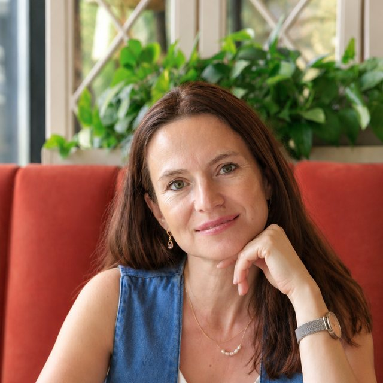
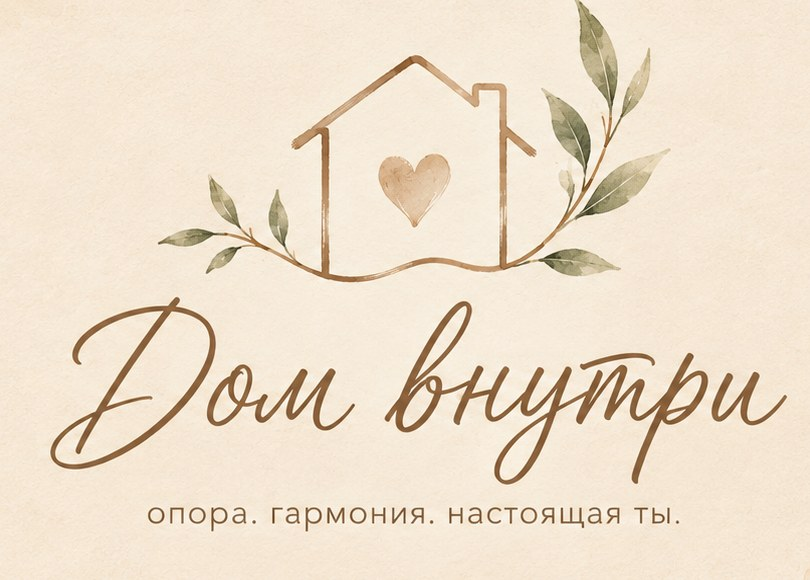

Москва · Ивантеевка · онлайн
Вы стараетесь в отношениях, а легче не становится?
Помогаю разобраться, почему так происходит, и что вы можете изменить со своей стороны.
Татьяна Пронина, семейный психолог, эмоциональный терапевт. Автор метода Дом внутри.
25–35 минут, онлайн, без обязательств

Узнаёте себя?
Бывает такое
- Вы промолчали, чтобы не ссориться, а потом весь вечер внутри кипит.
- Вы третий день прокручиваете в голове разговор, который так и не состоялся вслух.
- Вам кажется, что всё держится на вас: дом, настроение, отношения.
- Вы хотите близости, но в отношениях снова и снова становится больно.
- Вы боитесь сделать что-то не так с детьми и срываетесь на тех, кого любите.
- Вы устали объяснять, а вас всё равно как будто не слышат.
Если вы узнали себя, это не слабость и не «характер». Это значит, что вам давно не хватает опоры, и с этим можно работать бережно, в вашем темпе.
О методе
Как работает Дом внутри

Я эмоциональный терапевт и семейный психолог, мама двух сыновей. Метод Дом внутри — это глубинная психологическая и телесная работа: не техники и «правильные фразы», а честный путь к себе через чувства, тело и осознания.
Цель — внутренняя опора и уверенность в себе, спокойные и понятные отношения с партнёром и детьми. Чтобы вас слышали, вы понимали себя и могли действовать.
Отношения в паре
Ссоры, обесценивание, отдаление, потеря близости. Находим, что стоит за претензиями, и возвращаем контакт.
Тревога, границы, опора
Тревога, зависимость от отношений, трудность говорить о своих желаниях. Выстраиваем границы без вины и напряжения.
Семья и ребёнок
Страх быть «плохим родителем», накопленные эмоции, сложности с ребёнком. Создаём в семье спокойную и безопасную атмосферу.
Корни и сценарии
Как отношения с родителями и родом влияют на ваши отношения сегодня. Бережно, без «копания в прошлом ради прошлого».
Первый шаг
Бесплатная диагностика «Моё королевство»
За одну встречу вы увидите, где теряется ваша сила и что мешает жить легче. Без обязательств и без давления.
- Расскажете о своей ситуации так, как есть: можно коротко и неидеально.
- Увидите, что на самом деле стоит за напряжением и повторяющимися сценариями.
- Поймёте, какой формат помощи подходит именно вам, и нужен ли он вообще.
Стоимость личной работы от 6 000 ₽ за встречу. Формат и сроки подбираем после диагностики.
Записаться на бесплатную диагностику25–35 минут, онлайн, без обязательств

Как это устроено
Три простых шага
Оставляете контакт
Достаточно имени и пары слов о том, что беспокоит. Я отвечу вам лично.
Диагностика
Онлайн-встреча, на которой мы вместе смотрим на вашу ситуацию.
Решаем вместе
Если захотите продолжить, подберём формат: личная работа или работа с парой. Если нет, вы просто унесёте ясность.
Курс в записи
Мы ещё пара?
О причинах ссор и конфликтов в семье и потере близости. Смотрите в своём темпе и возвращайте контакт с близким человеком.
Для тех, кто решает в течение 15 минут, скидка: итоговая цена 1 490 ₽
Спросить про курс в Telegram →Познакомьтесь со мной
Несколько видео с моего канала
Вы не понимаете друг друга не потому, что разлюбили
Почему мы выбираем «не тех»?
Почему умные люди не умеют строить отношения?
Частые вопросы
Сомнения, которые нормальны
Не знаю, поможет ли мне такой формат
Именно для этого есть диагностика: за одну встречу видно, что происходит и подходит ли вам такой путь. Она бесплатная и ни к чему не обязывает. Если вам подойдёт другая помощь, я так и скажу.
У меня уже был опыт работы с психологами. Что изменится?
Если раньше работа шла на уровне разговоров и понимания, но ощущение опоры не появилось, значит, не хватало глубины. Метод Дом внутри соединяет психологическую и телесную работу: меняется не только то, что вы знаете о себе, но и то, что вы чувствуете.
Не хочу снова копаться в прошлом
Мы не возвращаемся в прошлое ради боли. Оно важно ровно настолько, насколько влияет на вас сейчас. Темп задаёте вы, и никто не заставит проживать больше, чем вы готовы.
Дорого. Как понять, что это стоит своих денег?
Поэтому первый шаг бесплатный: вы сначала увидите, что происходит, и только потом решите, нужна ли вам дальнейшая работа. Формат и сроки мы подбираем после диагностики, под вашу ситуацию.
Зачем разбираться с родителями, если проблема сейчас в партнёре?
Потому что в близких отношениях мы часто повторяем то, что знаем с детства: те же ожидания, тот же страх потери. Мы находим источник сегодняшнего напряжения и меняем его там, где оно началось. Тогда меняются и отношения в настоящем.
Вы работаете с парами и подростками?
Да. Работаю с парами, с семьями, у которых сложности с ребёнком, и с подростками. Часто пара приходит из-за ребёнка, и мы смотрим на динамику между партнёрами: дети её «зеркалят».
Где проходят встречи?
Диагностика проходит онлайн. Дальше работаем онлайн из любого города или очно в Москве и Ивантеевке.
Запись
Расскажите, что у вас происходит
Можно одной фразой и неидеально. Я прочитаю сама и отвечу лично, без давления. Всё, что вы напишете, останется между нами.
Вы уже сделали важное: заметили, что так больше не хочется. Следующий шаг совсем небольшой.